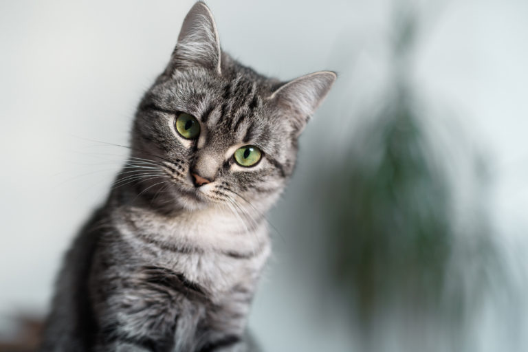
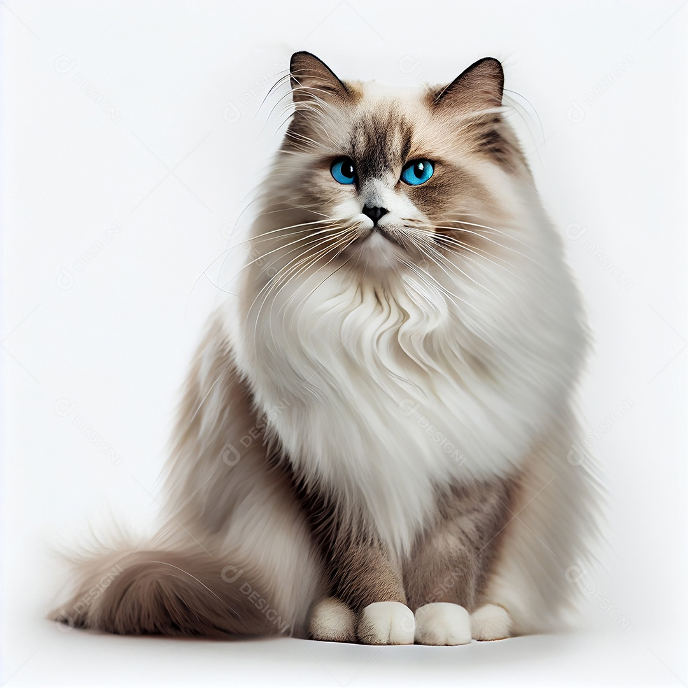

Gatos persas são animais muito tranquilos, que se dão bem com crianças, outros animais e apreciam ambientes calmos. Apesar de dóceis e calmos, eles também gostam de brincar e passar tempo ao lado de seus tutores - eles não exigem atenção, mas gostam de recebê-la. Para famílias mais agitadas, o gato persa pode ser considerado muito “quieto”. De olhos redondos e grandes e focinho pequeno e achatado, eles receberam esse nome por causa da região da onde vieram: a Pérsia, onde atualmente fica o Irã.

A raça de gato Siamês é uma das mais conhecidas e queridinhas do mundo. Além dos olhos azuis e da pelagem escura na face, orelhas e patas, esse lindo gatinho também tem uma personalidade totalmente adorável. O gato Siamês costuma ser muito tranquilo e carinhoso com a sua própria família, mas pode ser um pouco mais reservado perto de estranhos. Ele também é muito ativo e nunca dispensa uma boa brincadeira - parece até um cãozinho no corpo de um gato.

O American Shorthair é uma raça de gato de origem americana. Amistoso, muito inteligente e curioso, esse pet é bastante apegado ao dono, além de ser daqueles felinos que gostam de carinho e de estar sempre ao lado de seu tutor. Dono de uma personalidade brincalhona, o American Shorthair costuma ser sociável, faz amizades facilmente com desconhecidos e gosta de ser o centro das atenções. Carinhoso, o American Shorthair gosta de estar com a família dele, seja uma família grande, pequena ou até mesmo se o dono mora sozinho. Por amar um colo, esse gato de médio porte sempre chegará perto de você e pedir uma das coisas que ele mais gosta, mesmo que ele possa chegar a ter 40 centímetros. Outra vantagem de adotar um American Shorthair é de não necessariamente precisar de um dono experiente, pois os cuidados são simples e são adaptáveis em casas e também em apartamentos.
Conhecida como uma raça de gatos que se comporta muito parecido com cães, os ragdolls são altamente treináveis, algo que não é muito comum quando falamos de felinos domésticos. Truques como pegar a bolinha podem ser facilmente ensinados com a técnica do reforço positivo. Eles são gatos bastante dóceis e cheios de energia e se dão muito bem com crianças e outros animais - inclusive cachorros. Os gatos dessa raça geralmente são bem maiores em relação aos demais. Não muito populares no Brasil, seus criadores estão ganhando força nos últimos anos.
